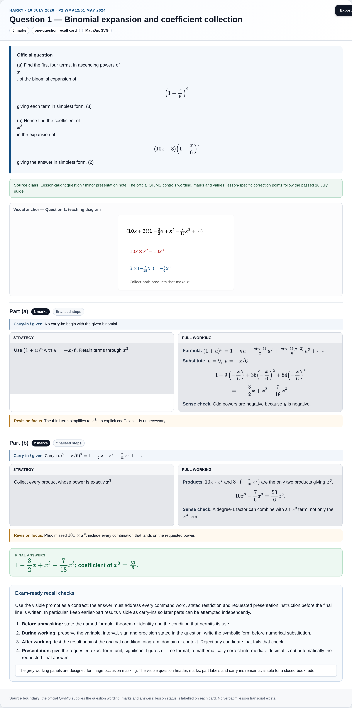
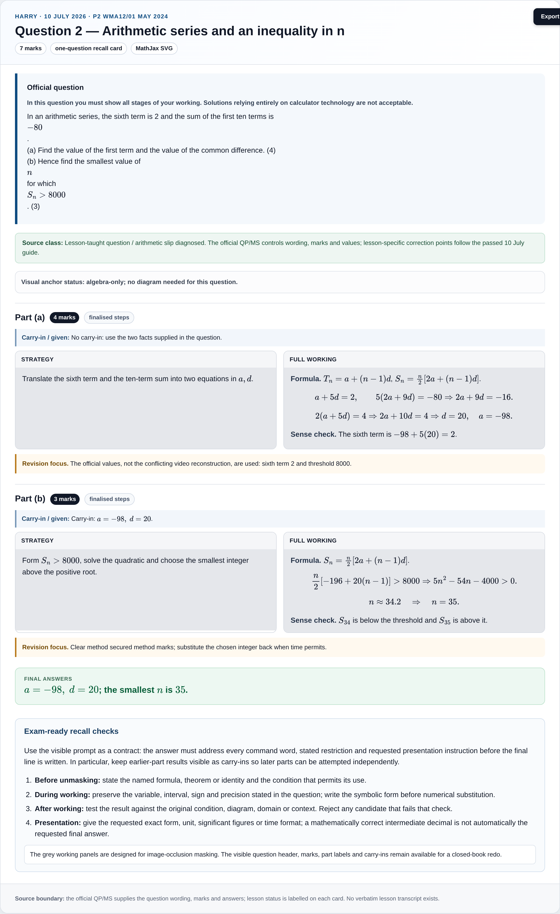
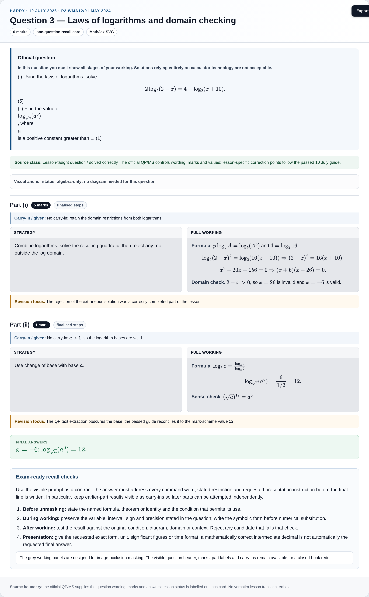
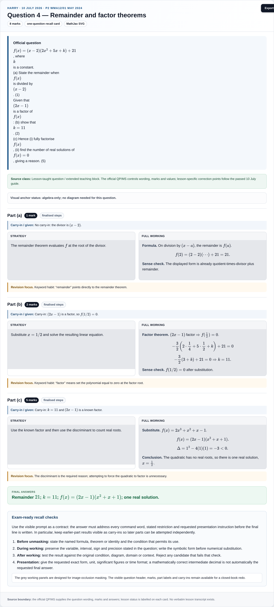
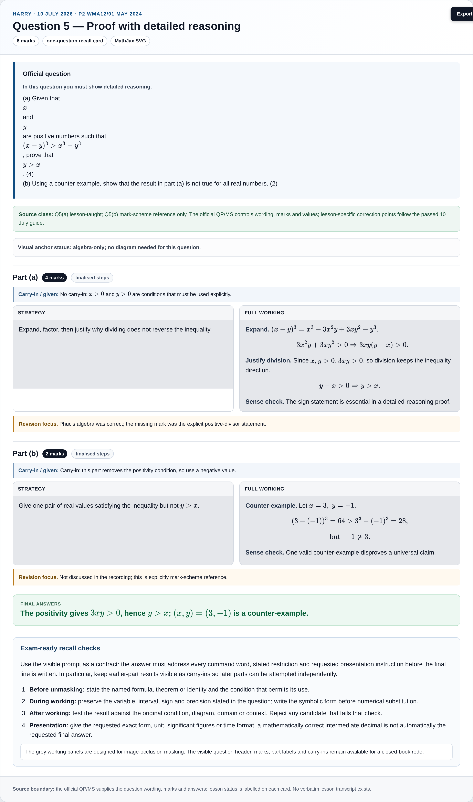
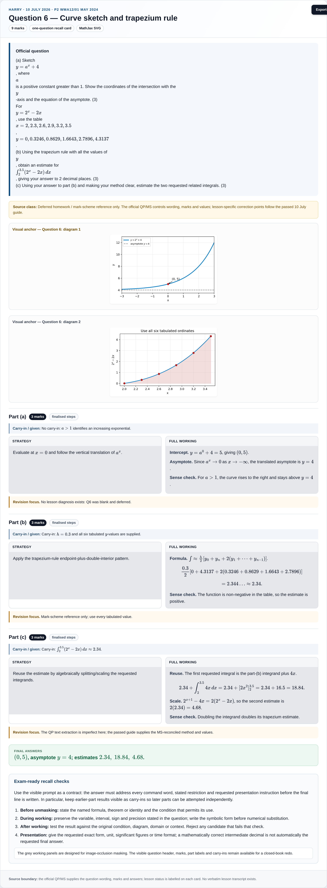
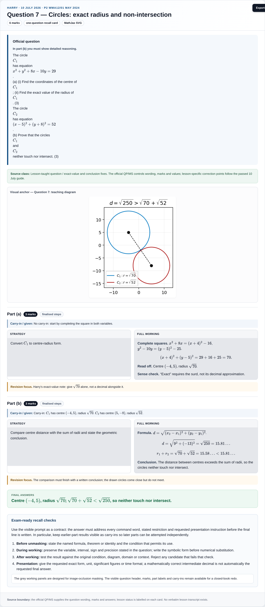
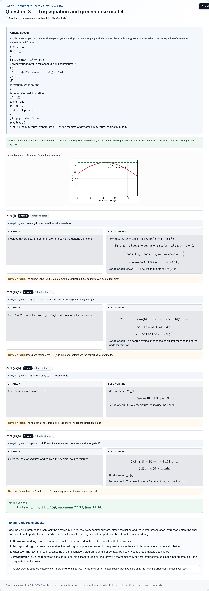
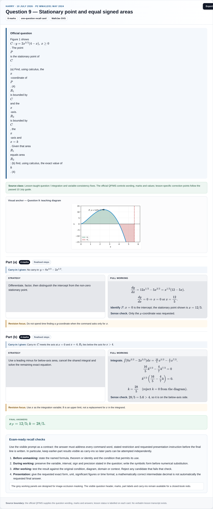
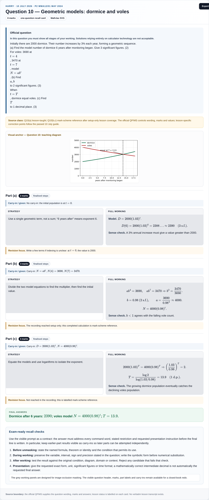

Harry · P2 May 2024 — multi-step rebuild
10 July 2026 lesson. Ten standalone question cards, each with a full question header, visible marks and parts, grey maskable work boxes, static PNG export, and compact visual anchors where the reasoning is visual.

Question 1Binomial expansion and coefficient collection · 5 marks

Question 2Arithmetic series and an inequality in n · 7 marks

Question 3Laws of logarithms and domain checking · 6 marks

Question 4Remainder and factor theorems · 8 marks

Question 5Proof with detailed reasoning · 6 marks

Question 6Curve sketch and trapezium rule · 9 marks

Question 7Circles: exact radius and non-intersection · 6 marks

Question 8Trig equation and greenhouse model · 12 marks

Question 9Stationary point and equal signed areas · 8 marks

Question 10Geometric models: dormice and voles · 8 marks